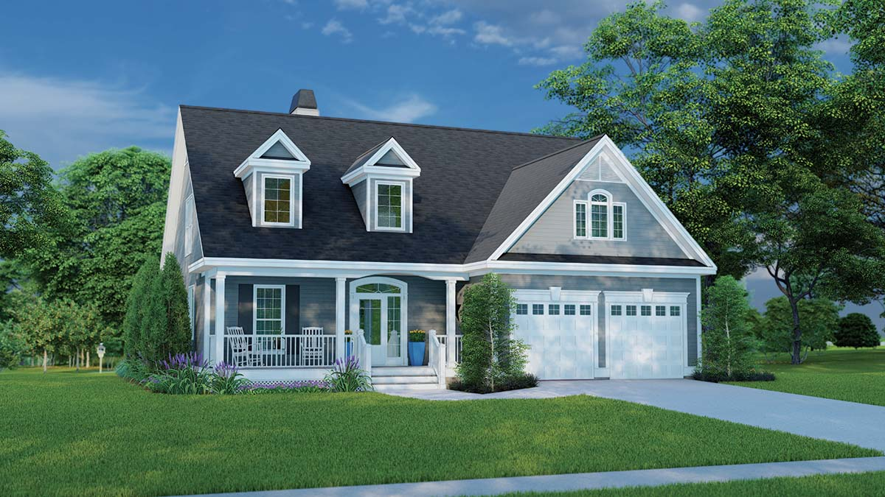

UTIA Genomics Center
2025-08-14
Connect to terminal session on ISAAC-NG login node
My preferred: ssh into login.isaac.utk.edu
Other options
Terminal
Workshop project directory
Assume that all commands in this mini workshop are run from the top level of this project directory unless explicitly stated otherwise.
Interactive compute session allows us to work directly on a compute node.
Run Apptainer
Get help with Apptainer and subcommands
Both Apptainer and Singularity commands show same version
Running singularity launches Apptainer
Terminal
Singularity Compatibility in Apptainer docs
Images are executable files containing all the components needed to run some software.
Containers are runtime instances of images.

Apptainer cache
Apptainer does some image management for us. When it fetches an image from a remote location, it caches those images to prevent repeatedly downloading them. By default, it uses $HOME/.apptainer/cache for its cache directory. Home directories on ISAAC-NG are rather small, and Apptainer images can be large, so it makes sense to store these in scratch.
apptainer pull – Get Apptainer image from remote URIView help docs
Basic usage – apptainer pull [output file] <URI>
Pull Samtools image – We’ll use Samtools to analyze BAM file
Terminal
# set variable for Samtools image URI
samtools_img_uri="https://depot.galaxyproject.org/singularity/samtools:1.21--h50ea8bc_0"
# pull the apptainer image
1apptainer pull samtools_1-21.sif "${samtools_img_uri}".sif extension.
apptainer shell <image> – Spawn interactive shell in containerapptainer run <image> [arguments] – Run the container runscriptapptainer exec <image> <command> – Execute custom command in containerapptainer shell – BasicsEnter interactive shell session in container
How to tell you’re in container shell session:
echo "${APPTAINER_NAME}" prints name of containerapptainer shell – Software in the Samtools containerEnter interactive shell session in container
Samtools is available inside the container
apptainer shell – Files available in the Samtools containerDirectly access files in project directory
All of your favorite ISAAC-NG directories are accessible inside of containers right where we expect them to be!
Bind mounts
These directories are mounted when we run the container – they are not part of the image. Bind mounts are set in the configuration or during the container run command. The ISAAC-NG sys admins have configured these directories to be mounted by default. Other systems will have different configurations, and may not be as user friendly by default. Thanks, sys admins!
apptainer run – Relies on runscriptView runscript built into container – May be hard to parse
Run the Samtools container
Run Samtools in the Samtools container
apptainer run
Running this command is completely dependent on the runscript. Since we have no control over the runscript of a container we did not create, I tend to not recommend relying on apptainer run.
apptainer exec – Execute samtools directly in containerTerminal
apptainer exec
Running this command is completely independent from how the container is setup.
If 1) the software is available in the container and 2) the file can be accessed in the container, the command should run.
apptainer pullapptainer shellapptainer execapptainer runCount records in BAM with Samtools – samtools view -c <input.bam>
Count high quality records in BAM – samtools view -c -q 10 <input.bam>
Filters reads by minimum MAPQ (mapping quality)
Terminal
Quick alignment stats of filtered BAM file – samtools view -h -q 10 <input.bam> | samtools flagstat -
Pipes in Apptainer
Apptainer containers work with pipes and redirects. stdout/stdin/stderr goes back and forth between the container and the host OS. In the command above, the filtered BAM stream from the container is piped into the samtools command executed on the host OS. We don’t have the samtools command available on the host OS, thus the command not found error.
Pipe out of one container and into another
compute_bam_stats.sh
# get input bam file from command line argument
input_bam="${1}"
echo "Input BAM file: ${input_bam}"
# pull samtools image if it doesn't already exist
samtools_img_uri="https://depot.galaxyproject.org/singularity/samtools:1.21--h50ea8bc_0"
if [ ! -e samtools_1-21.sif ]; then
apptainer pull samtools_1-21.sif "${samtools_img_uri}"
fi
# print alignment stats
echo "Number records in BAM:"
apptainer exec samtools_1-21.sif samtools view -c "${input_bam}"
echo "BAM quick stats:"
apptainer exec samtools_1-21.sif samtools flagstat "${input_bam}"
# print alignment stats for high quality alignments
echo "Number high quality records in BAM:"
apptainer exec samtools_1-21.sif samtools view -c -q 10 "${input_bam}"
echo "High quality BAM quick stats:"
apptainer exec samtools_1-21.sif samtools view -h -q 10 "${input_bam}" | apptainer exec samtools_1-21.sif samtools flagstat -Run the BAM stats script
Abstract away details to simplify maintenance and understanding of the script.
compute_bam_stats.sh
# get input bam file from command line argument
input_bam="${1}"
echo "Input BAM file: ${input_bam}"
# pull samtools image if it doesn't already exist
samtools_img_uri="https://depot.galaxyproject.org/singularity/samtools:1.21--h50ea8bc_0"
if [ ! -e samtools_1-21.sif ]; then
apptainer pull samtools_1-21.sif "${samtools_img_uri}"
fi
# print alignment stats
echo "Number records in BAM:"
apptainer exec samtools_1-21.sif samtools view -c "${input_bam}"
echo "BAM quick stats:"
apptainer exec samtools_1-21.sif samtools flagstat "${input_bam}"
# print alignment stats for high quality alignments
echo "Number high quality records in BAM:"
apptainer exec samtools_1-21.sif samtools view -c -q 10 "${input_bam}"
echo "High quality BAM quick stats:"
apptainer exec samtools_1-21.sif samtools view -h -q 10 "${input_bam}" | apptainer exec samtools_1-21.sif samtools flagstat -Numerous explicit uses of apptainer pull/exec samtools_1-21.sif
Simple refactor: Replace explicit references to image path with a variable
compute_bam_stats.sh
# get input bam file from command line argument
input_bam="${1}"
echo "Input BAM file: ${input_bam}"
# set Samtools remote image URI and local image path
samtools_img_uri="https://depot.galaxyproject.org/singularity/samtools:1.21--h50ea8bc_0"
samtools_img_path="samtools_1-21.sif"
# pull samtools image if it doesn't already exist
if [ ! -e "${samtools_img_path}" ]; then
apptainer pull "${samtools_img_path}" "${samtools_img_uri}"
fi
# print alignment stats
echo "Number records in BAM:"
apptainer exec "${samtools_img_path}" samtools view -c "${input_bam}"
echo "BAM quick stats:"
apptainer exec "${samtools_img_path}" samtools flagstat "${input_bam}"
# print alignment stats for high quality alignments
echo "Number high quality records in BAM:"
apptainer exec "${samtools_img_path}" samtools view -c -q 10 "${input_bam}"
echo "High quality BAM quick stats:"
apptainer exec "${samtools_img_path}" samtools view -h -q 10 "${input_bam}" | apptainer exec "${samtools_img_path}" samtools flagstat -Check apptainer exec docs.
Many URI protocols are listed as valid <container> options. https://* is not among them, but it works.
apptainer exec with remote image URI pulls and caches remote image and executes command inside container
Larger refactor:
compute_bam_stats.sh
# get input bam file from command line argument
input_bam="${1}"
echo "Input BAM file: ${input_bam}"
# set Samtools remote image URI
samtools_img_uri="https://depot.galaxyproject.org/singularity/samtools:1.21--h50ea8bc_0"
# print alignment stats
echo "Number records in BAM:"
apptainer exec "${samtools_img_uri}" samtools view -c "${input_bam}"
echo "BAM quick stats:"
apptainer exec "${samtools_img_uri}" samtools flagstat "${input_bam}"
# print alignment stats for high quality alignments
echo "Number high quality records in BAM:"
apptainer exec "${samtools_img_uri}" samtools view -c -q 10 "${input_bam}"
echo "High quality BAM quick stats:"
apptainer exec "${samtools_img_uri}" samtools view -h -q 10 "${input_bam}" | apptainer exec "${samtools_img_uri}" samtools flagstat -Abstracts away the fact we’re using a container from the main program logic
Terminal
# make function to execute Samtools in Apptainer container
function samtools {
local img_uri="https://depot.galaxyproject.org/singularity/samtools:1.21--h50ea8bc_0"
apptainer exec "${img_uri}" samtools "${@}"
}
# run samtools from the container using its function
samtools view -c data/alignments/wt_antiflag_ip1_rep1.bam‘Load’ container from function
The abstraction makes this method powerful and expressive, but it introduces some overhead. Since samtools is a function and not an executable file here, there will be situations in which it doesn’t behave exactly like running the samtools command. There may also be scenarios where passing arguments to the samtools command in the container through the samtools function doesn’t behave as expected.
Long story short: beware of edge cases. This abstraction is best for experienced shell script writers and very straightforward use cases. Don’t trade working code for pretty code!
Most significant refactor: Replace individual apptainer exec commands with calls to samtools function
compute_bam_stats.sh
# get input bam file from command line argument
input_bam="${1}"
echo "Input BAM file: ${input_bam}"
# make function to execute Samtools in Apptainer container
function samtools {
local img_uri="https://depot.galaxyproject.org/singularity/samtools:1.21--h50ea8bc_0"
apptainer exec "${img_uri}" samtools "${@}"
}
# print alignment stats
echo "Number records in BAM:"
samtools view -c "${input_bam}"
echo "BAM quick stats:"
samtools flagstat "${input_bam}"
# print alignment stats for high quality alignments
echo "Number high quality records in BAM:"
samtools view -c -q 10 "${input_bam}"
echo "High quality BAM quick stats:"
samtools view -h -q 10 "${input_bam}" | samtools flagstat -According to Docker:
Until recently Docker was nearly synonymous with containerization
Still immensely popular – Borderline default containerization option
Terrible for HPCs – Almost always completely unavailable
Simply use the correct remote URI protocol
Prepend images on Dockerhub or quay.io with docker:// instead of our usual https://
Terminal
Cache Docker images
Docker images are also cached by Apptainer. Rerun the command from above and it should run much faster.
Need to balance several factors:
Official image from software authors/maintainers
Large, community driven resources – Especially for general software
BioContainers container registry
Public repositories, e.g. other people’s images on Docker Hub
Build custom image
Why?
How?
Useful links from the Rocker project
In the next several slides, we’ll build a Slurm job submission script based on the Rocker example script.
SBATCH headers control job submission configurations
rstudio_server.sh
Create a temporary directory specific to your user session so that your specific temporary files don’t clash those of other users.
Configure R session to use R packages/libraries that won’t conflict with those from another R session and installation you have.
rstudio_server.sh
# Set R_LIBS_USER to an existing path specific to rocker/rstudio to avoid conflicts with
# personal libraries from any R installation in the host environment
cat > ${workdir}/rsession.sh <<"END"
#!/bin/sh
1export R_LIBS_USER=${HOME}/R/rocker-rstudio/4.4.2
mkdir -p "${R_LIBS_USER}"
## custom Rprofile & Renviron (default is $HOME/.Rprofile and $HOME/.Renviron)
2# export R_PROFILE_USER=/path/to/Rprofile
# export R_ENVIRON_USER=/path/to/Renviron
exec /usr/lib/rstudio-server/bin/rsession "${@}"
END
# make R session script executable and configure it to be bound into the container at runtime
chmod +x ${workdir}/rsession.sh
export SINGULARITY_BIND="${workdir}/rsession.sh:/etc/rstudio/rsession.sh""${HOME}" directory by default. If you plan to use this for real analyses it’s not a bad idea to set this to use your "${SCRATCHDIR}".
Require a username and password for additional security
rstudio_server.sh
We have to have an open port to expose our RStudio server. Since ISAAC is a shared resource, many of the ports will likely be taken, so we have to find and use an available one.
Write RStudio server session usage directions to stderr. We will access these in the error file specified in the SBATCH header.
rstudio_server.sh
# write session usage information to stderr
cat 1>&2 <<END
1. SSH tunnel from your workstation using the following command:
ssh -N -L 8787:${HOSTNAME}:${PORT} ${SINGULARITYENV_USER}@login.isaac.utk.edu
and point your web browser to http://localhost:8787
2. log in to RStudio Server using the following credentials:
user: ${SINGULARITYENV_USER}
password: ${SINGULARITYENV_PASSWORD}
When done using RStudio Server, terminate the job by:
1. Exit the RStudio Session ("power" button in the top right corner of the RStudio window)
2. Issue the following command on the login node:
scancel -f ${SLURM_JOB_ID}
ENDHere we actually run the RStudio server command that starts the RStudio server session we will connect to.
rstudio_server.sh
# run RStudio Server from apptainer image
readonly rstudio_server_img_uri="docker://rocker/rstudio:4.4.2"
apptainer exec \
--cleanenv \
--scratch /run,/tmp,/var/lib/rstudio-server \
--workdir ${workdir} \
"${rstudio_server_img_uri}" \
rserver --www-port ${PORT} \
--auth-none=0 \
--auth-pam-helper-path=pam-helper \
--server-user=$(whoami) \
--auth-stay-signed-in-days=30 \
--auth-timeout-minutes=0 \
--rsession-path=/etc/rstudio/rsession.sh
printf 'rserver exited' 1>&2rstudio_server.sh
#!/bin/bash
#SBATCH --job-name=rstudio_server
#SBATCH --error=.cache/sbatch_logs/%j_-_%x.err
#SBATCH --output=/dev/null
#SBATCH --signal=USR2
#SBATCH --account=ACF-UTK0011
#SBATCH --partition=short
#SBATCH --qos=short
#SBATCH --cpus-per-task=1
#SBATCH --mem=4GB
#SBATCH --time=00-00:15:00
# Create temporary directory to be populated with directories to bind-mount in the container
# where writable file systems are necessary. Adjust path as appropriate for your computing environment.
workdir=$(mktemp -d)
# Set R_LIBS_USER to an existing path specific to rocker/rstudio to avoid conflicts with
# personal libraries from any R installation in the host environment
cat > ${workdir}/rsession.sh <<"END"
#!/bin/sh
export R_LIBS_USER=${HOME}/R/rocker-rstudio/4.4.2
mkdir -p "${R_LIBS_USER}"
## custom Rprofile & Renviron (default is $HOME/.Rprofile and $HOME/.Renviron)
# export R_PROFILE_USER=/path/to/Rprofile
# export R_ENVIRON_USER=/path/to/Renviron
exec /usr/lib/rstudio-server/bin/rsession "${@}"
END
# make R session script executable and configure it to be bound into the container at runtime
chmod +x ${workdir}/rsession.sh
export SINGULARITY_BIND="${workdir}/rsession.sh:/etc/rstudio/rsession.sh"
# Do not suspend idle sessions.
# Alternative to setting session-timeout-minutes=0 in /etc/rstudio/rsession.conf
# https://github.com/rstudio/rstudio/blob/v1.4.1106/src/cpp/server/ServerSessionManager.cpp#L126
export SINGULARITYENV_RSTUDIO_SESSION_TIMEOUT=0
# set user ID and password for RStudio server
export SINGULARITYENV_USER=$(whoami)
export SINGULARITYENV_PASSWORD=$(openssl rand -base64 15)
# get unused socket per https://unix.stackexchange.com/a/132524
# tiny race condition between the python & singularity commands
readonly PORT=$(python3 -c 'import socket; s=socket.socket(); s.bind(("", 0)); print(s.getsockname()[1]); s.close()')
# write session usage information to stderr
cat 1>&2 <<END
1. SSH tunnel from your workstation using the following command:
ssh -N -L 8787:${HOSTNAME}:${PORT} ${SINGULARITYENV_USER}@login.isaac.utk.edu
and point your web browser to http://localhost:8787
2. log in to RStudio Server using the following credentials:
user: ${SINGULARITYENV_USER}
password: ${SINGULARITYENV_PASSWORD}
When done using RStudio Server, terminate the job by:
1. Exit the RStudio Session ("power" button in the top right corner of the RStudio window)
2. Issue the following command on the login node:
scancel -f ${SLURM_JOB_ID}
END
# run RStudio Server from apptainer image
readonly rstudio_server_img_uri="docker://rocker/rstudio:4.4.2"
apptainer exec \
--cleanenv \
--scratch /run,/tmp,/var/lib/rstudio-server \
--workdir ${workdir} \
"${rstudio_server_img_uri}" \
rserver --www-port ${PORT} \
--auth-none=0 \
--auth-pam-helper-path=pam-helper \
--server-user=$(whoami) \
--auth-stay-signed-in-days=30 \
--auth-timeout-minutes=0 \
--rsession-path=/etc/rstudio/rsession.sh
printf 'rserver exited' 1>&2Takes a while to build image file. Watch for changes to file with wait tail -n 20 .cache/sbatch_logs/<job ID>_-_rstudio_server.err
ssh command from the error file. Authenticate and leave the SSH session open.Authenticate using the username and password listed in your error file.
Try out new version of software
Replace Conda
Share scripts
Workflows/pipelines
Reach out: tfreem10@utk.edu